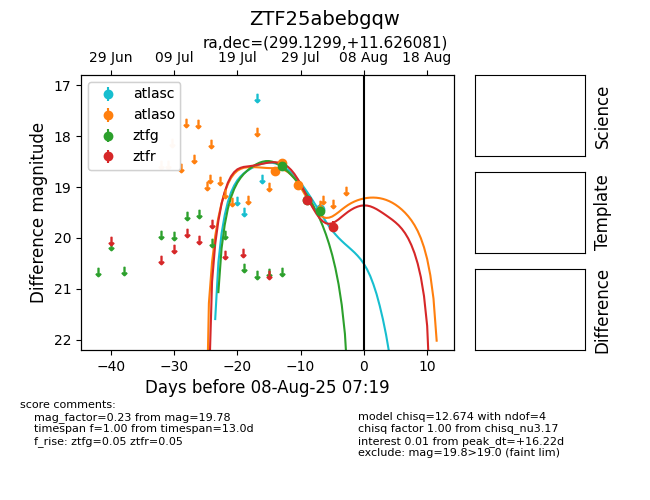

Target ZTF25abebgqw at 2025-08-08 10:40, see:
FINK: fink-portal.org/ZTF25abebgqw
Lasair: lasair-ztf.lsst.ac.uk/objects/ZTF25abebgqw
ALeRCE: alerce.online/object/ZTF25abebgqw
alt names
ZTF25abebgqw (ztf,fink)
coordinates:
equatorial (ra, dec) = (299.1299,+11.62608)
galactic (l, b) = (50.8756,-8.76269)
photometry
last atlasc=19.43, atlaso=18.95, ztfg=19.46, ztfr=19.78
1 atlasc, 3 atlaso, 3 ztfg, 2 ztfr detections
